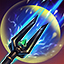

糯竹的奶妈Build

亚龙人窝登奶幻化
玩了这么久的奶妈了，也算是稍微有了一些经验。在这里写一篇奶妈教程，跟大家分享一下自己的心得。
本指南基于U46补丁（版本11.0.5）编写，其中的数据来源，如无特殊说明，均为糯竹个人测试总结。随着新版本发布，部分资讯可能与游戏提供的内容不一致，请以实际游戏版本为准。
先说好，我能力有限，只玩PVE，PVP内容与我无关。这其中的经验大概只能支撑到V试炼，至于HM或者三合一不在我的考虑范围内，有说错的也请不要骂我qwq。
1.奶妈基础
在开始之前，请你思考这样几个问题：
①奶妈的作用是什么？换言之，奶妈需要做什么工作？
②奶妈的首要任务是什么？换言之，奶妈最需要关注的是什么，次要关注的是什么？
③奶妈该如何确保自己工作的完成？换言之，除了自己的能力之外，需要什么硬件设施？
如果你能很快地回答上来这三个问题，恭喜你，你对奶妈的理解已超过大多数ESO玩家，可以去奶试炼了（bushi）。
但如果你对这些问题没有头绪，也不需要气馁，这篇文章会就这三个问题展开，一一解答你的疑惑。
1.1奶妈是什么
奶妈，即治疗者（Healer），是团队中治疗队伍并施加增减益，参与机制的支援类角色。一般而言，四人本中需要一个奶妈，12人试炼中需要两个。
你也许听说过，四人本里奶妈没有什么用，一坦三输出胜过奶妈多矣。真实情况是，在低难度本中团队没有生存压力，奶妈更多地起到锦上添花的作用，即提供增益。如果奶妈自身能力欠缺，导致buff覆盖率较低，不如三输出伤害高，此时奶妈的确“作用不大”；而在高难度本中，奶妈不可或缺：如果没有奶妈进行治疗，队伍必然减员乃至团灭。因此，奶妈是团队中非常重要的角色。
1.2开始之前的准备
如果你想要成优秀的奶妈，我必须先给你打个预防针：这条路上充满了艰难险阻，会遇到非常多的困难。你也许会想到要放弃，但请一定要坚持下来！
实际上，奶妈应该是三个位置中最好上手的，但是要做到精通是很困难的，我也处于是能玩，但远远达不到厉害的程度，所以再说一遍，如果有说错了的也请不要骂我qwq。
首先就是心态要好。这不仅仅是说因为你的过失团灭了之后，你仍然需要保持良好的心态，更为关键的是，无论队友是不是因为你的错误而死，你都需要保持冷静并且随时做好救场的准备。
Mephisto_z大佬曾指出，坦克遇到危机关头不要慌，坦克慌了基本就要黄了。这对奶妈而言其实也一样。你能否在关键时刻给出必要的buff（如号角、PP、高级杀戮）？你能否在危急关头送上救命的一口奶？这些都考验你对机制的熟悉、理解程度和心理素质。
再者，和输出不同，坦克和奶妈更像是站在幕后默默付出的工具人。坦奶们可能不会有那种像输出一样毛到了全队最高的高光时刻，更多的时间都是在维持自己的循环，做着无言的buff机，但是，正是坦奶们默默的付出，为输出们创造了相对稳定的输出环境和良好的buff条件，也才有输出们一次次的突破自我。你也选择了奶妈这条默默付出的道路，请允许我对你说：你是一个高尚的人。
1.3 奶妈需要干什么
让我们欣赏一组大佬们的总结：
奶妈可以当成是奶人版的法系输出。——科学
你把队友当做桩子，hot当成dot，给队友的buff当做给怪上的debuff，这样就好理解了。——天佑破晓
从大佬们的话中发现了什么？奶妈和输出有共通之处，或者更进一步，奶妈也是输出，只不过输出的对象是队友。
我们都知道，输出在战斗时需要干什么？当然是对怪输出了。非常好！那么请问，奶妈在战斗时需要干什么？当然是对队友输出啦，也就是奶人。
你这么想就大错特错了，要我说，奶妈的工作并不是单纯奶人，而是在确保自己生存的情况下奶人。
为什么？我们反过来想想，奶妈死了会出现什么情况？
如果奶妈死了，输出和坦克会失去治疗来源，如果地上有大量AOE或出现高额直伤，很容易接连减员导致团灭。所以，请务必在确保自己生存的情况下奶人。
这一点对于复活队友而言也一样，复活队友需要耗费很长时间，在此期间无法直接治疗队友。一般情况下，奶妈不会优先复活队友，而应该让输出去拉人，自己继续照顾还活着的队友，除非你清楚接下来不会有致命机制，或是实在没人去拉队友了（比如四人本里输出全死了，只剩下坦奶的情况）。
如果治疗对你已经不是难题，你应该思考如何增益队友，为队友创造良好的输出环境。
其中，增益包括对于队友的buff与对于怪的debuff，我们举几个例子：
①进攻类buff：如高级力量、高级勇气、高级杀戮，能够提升队伍输出
②防御型buff：如高级信念，次级守护、次级坚毅，能够增加队伍容错
③对怪物的debuff：如高级破甲、次级脆弱、高级怯懦，直接作用于怪物，能帮助提升输出或者减轻队伍压力
④对队伍的支援类buff：如美瑞蒂亚的援助（利刃头给队友回资源的效果）、高级智慧和推球
⑤护盾：这个会在之后详细讲解
你需要调整自己的装备和技能来使队伍增益最大化，例如，试炼中坦克和奶妈会沟通好自己要穿什么带什么技能。拿高级脆弱debuff举例，假如队伍里有死灵坦，他穿了逆转潮汐（缩写tt），带了冰川巨像（俗称胖子），那么奶妈就不需要穿大德鲁伊德维里克了。
如果buff已经选好了，你所需要做的就是在战斗期间维持buff，然后，你就会发现，干，奶妈怎么这么忙！
是的呢，不忙还能叫奶妈吗？奶妈是没有时间摸鱼的。只要稍微摸一摸鱼，buff覆盖率就会很直观地反映出来。我见过最炸裂的一个窝登奶，做到了7%的高级信念（只在开始的时候放了一次冰甲），20%的次级坚毅（正常情况下应该是100%），虽然是极端状况，但还是希望大家引以为戒。
如果你已经能维持相当不错的buff覆盖了，你可以去尝试试更高难度的内容挑战自己了！本教程完（不是）。
这才是刚刚开始呢！让我们进入下一个部分，正式开始你的奶妈之路。
1.4 奶妈的种族、加点、梦达斯、食物选择
首先说明一点，和其他PVE内容一样，如果你并不追求极致，那么种族等选择并不会成为障碍，你可以自由选择你喜欢的种族。
比较适合的种族有：布莱顿人、亚龙人和高精灵，亮点如下：
布莱顿人：2310法抗；130点额外回蓝；7%法术减耗
亚龙人：造成的治疗提升6%；饮用药水时，回复3125生命、魔力和耐力，人称小三回
高精灵：258点法伤；使用技能时，回复数值较低的一项资源
稍次一点的有暗精灵、帝国人、诺德人和虎人。暗精灵拥有双最大资源和双伤被动，帝国人有6%全减耗被动，诺德人有护甲和终极点被动，虎人有暴击治疗被动。
再次一点就真的不推荐了qwq……
加点：64点蓝（这跟法系输出是共通的）
CP：
绿CP：无影响，可自由选用。强烈推荐天马赐福Perk提升脱战状态移速。
蓝CP：
一定需要的CP：复苏、迅速新生和抚慰浪潮。
剩下一个可以灵活选择，例如活力溢流给队友资源回复、命悬一线在危急关头给盾、战斗技巧加爆伤（虽说奶妈一般不堆暴击）等等。不过最常用的还是活力溢流和命悬一线。
红CP：
可以选用无限活力和强化加最大血量和护甲，矫健和专家闪避可以不耗耐挣脱和翻滚。
我自己是挺担心资源问题的，所以我会带虹吸法术和血腥复苏。
此外，强烈推荐敏捷，不仅在需要大量走位的情况下更占优，平常跑图用起来也很舒服，不论我玩什么这个都是必带的。
梦达斯：
奶妈一般选择仪式座增加治疗量，或是选择侍灵座回蓝，也有选择盗贼座提升暴击率的，不过相对较少。
食物：
我没想到的是，这一点也能引发很大的争议。不过，从侧面上也能看出其重要性。
首先，不管你是多少级，我都建议你维持身上有食物增益，最差也应该是加蓝上限的食物，因为蓝量会影响法术伤害，从而影响你的治疗量。
我个人很推荐那种同时加血加蓝的食物，比如说独孤城粟米三文鱼汤，兼具回蓝效果的也不错，例如强效巫母之酿和发条青柑肉片（假如吃得起的话）。
不过，在没有资源压力的状况下，我尤其推荐骷髅糖。跟发条青柑肉片比起来，它不仅提供更多血量和蓝量，换言之，更高的治疗量和更高的容错，更为重要的是，它还会提升你的耐力上限，能进一步提升你的容错空间。
1.5 奶妈的技能分类
我们首先解释一些专有名词。
Hot，即healing over time，持续治疗效果
Hps，即healing per second，每秒治疗量
Aoh，即area of healing，治疗区域
瞬抬，瞬间治疗
Spam，在dot（类比奶妈就是hot）生效期间一直使用的输出（治疗）技能
Buff，对队友施加的增益效果
Debuff，对怪施加的减益效果
重击，这里默认是完全蓄力的重攻击
技能分类
①瞬抬技能：瞬间回血。例如奶杖三砸地、圣殿生命之息、窝登蘑菇。
②地面技能：在地面施放的技能，想要换位置只能重新铺设。比如奶圈、圣殿净化圈、龙骑火山灰、窝登花圈。一般都是hot技能，不过花圈最后有一个瞬抬效果。
③Buff奶：挂在队友身上的奶技，不用担心队友走位奶不到他们。如奶线、黄伟哥。
④Buff技能：给队友上buff用的。比如龙骑火岩武器、窝登冰甲、圣殿灿烂光环。
⑤Debuff技能：对怪使用。如剑盾一穿透护甲，死灵大招胖子，窝登的苍蝇。
⑥护盾技能：给队友上护盾，相当于额外血条。注意：有护盾的情况下，如果血量降为0还是会死；湮灭伤害无视护盾。如无畏骨浪、龙骑破碎之盾、奶杖盾和屏障。
⑦辅助类技能：给队友回资源，比如圣殿投矛和无畏推球，或者是实现特定效果，比如用心火嘲讽。
⑧其他技能：诸如死灵复活大，龙骑无敌，不在讨论范围内。
在前面，我们讲过奶妈需要调整自己的装备和技能来使队伍buff收益最大化，因此选择什么样的技能，怎样选择技能就成了一个重要的问题。那么，就让我们进入下一步，奶妈的技能选择。
2.奶妈技能选择
副职系统允许你自定义职业技能线，这使以前许多稀有buff可以轻易获得，同时可以实现技能线间强强联手，达到1+1＞2的效果。尽管我讨厌副职系统，但这对坦奶来说是极大的利好。
技能线总览
| 评级 | 技能线 | 说明 | 终极点回复 |
|---|---|---|---|
 |
绿色平衡 | 有着强无敌的次级坚毅被动，加上hot瞬抬协同三位一体顶好用的花圈、终极点消耗极低的大招以及其他治疗技能，团队中必有的一条线 | 无 |
| 虹吸 | 催化剂被动使嗑药回30U，还有快速回U的转移被动，加上魔力洪水增加蓝上限，更别提谁用谁说好的生命供奉和虹吸攻击，几乎是必带的一条线 | 有 | |
| 药剂符师 | 大招魔方提供200双伤，奶激光奶量极高，加上奶盾和奥数圈两个不错的辅助技能，此外魔核被动还能白嫖12%治疗量，还有护盾技能减耗与护盾强化，非常优质的一条线 | 无 | |
 |
恢复之光 | 灿烂光环给全队小三维回复，还有标志性的净化圈，以及回资源+高级信念的符文专注，作为奶线是不错的选择 | 有 |
| 魔族召唤 | 有着最强瞬抬奶鸟，但真正的含金量在于大招石头人能给予给团队稀有的高级狂怒buff，可选的一条线 | 无 | |
 |
凛冬之拥 | 真正有用的只有一个大寒霜斗篷，但这条线的被动就决定了它更适合坦克，而非奶妈 | 有 |
| 存世亡者 | 在高压环境的奶量不错，而且有复活大，但其他技能不太亮眼 | 有 | |
| 大地之心 | 给全队提供高级双伤buff和小物伤，有无敌和石拳，大招回资源，可谓是十分全面，不过……奶妈打拳耐力容易跟不上，而且这条线很多buff对奶妈而言比较鸡肋。顺便提一句，决胜时机是少数受法伤影响但不受物伤影响的装备，物伤被动Ro是吃不到的 | 有 | |
| 黎明之怒 | 有着hot净化之光和相当不错的小法伤和技能减耗被动，但总体来说用处不大 | 有 | |
 |
异典士兵 | 以坦克技能为主，虽然有无色之池这种优质的辅助技能，但对奶妈而言用处不太大 | 有 |
| 暗影 | 比较有用的技能是振奋之路，但单为它选整条线很不值，所以价值不大 | 无 | |
| 动物伙伴 | 以输出技能为主，尽管气母相当优质，但单为它选整条线很不值，所以价值不大 | 有 | |
| 神族之矛 | 唯一的亮点就是提供双资源回复协同的发光碎片，但鉴于神族之矛线在输出中出场率较高，所以不推荐 | 无 | |
| 墓穴领主 | 有大招胖子和埋骨地两个亮点技能，但跟奶妈契合度不高。而且高级脆弱和次级脆弱都已经有了其他覆盖手段，所以不推荐 | 无 | |
 |
烈焰之刃 | 唯一的奶技是奶火球，慢走不送 | 无 |
| 巨龙之力 | 没用，慢走不送 | 无 | |
| 风暴呼唤 | 没用，慢走不送 | 无 | |
| 黑暗魔法 | 几乎没有能用的技能，不推荐 | 无 | |
| 白骨暴君 | 虽说吸U还行，但单为它选整条线很不值，所以慢走不送 | 有 | |
| 刺杀 | 没啥能用的技能，而且输出人手一条刺杀线，次级野性拿到手软，慢走不送 | 有 | |
| 古籍使者 | 全是输出技能，慢走不送 | 无 |
这里只介绍可能会用到的技能，其他技能等你发挥。
职业-动物伙伴
大招熊，两个进阶都可选用，单人做任务的时候可以带，或者是挂着蹭被动（这种情况下这个大招就是废的，熊占主副手两个格子）。 |
|
 |
灼烧进阶为深海撕裂，帮助团队上大小破甲（一般是坦克提供）。 |
虫群，两个进阶都可选用，提供次级脆弱debuff。 |
|
 |
雌性气母，一个技能同时解决资源问题和法术伤害问题，不消耗资源的同时还附带净化效果，堪称神技。根据资源选回蓝回耐进阶。窝登奶大概率带的技能。 P.S.如果资源不够没法治疗自己，可以靠狂搓气母蹭回血被动苟命。狂搓气母也可以消除自己的debuff。 一个争议点：气母究竟是不是必需的？如果你打hm甚至三合一，大力丸是当水喝的，气母提供双伤的作用大大降低，为了队伍buff大概率会下掉；但如果平时打本只喝渣蓝，为了维持双伤面板，气母就是必需的。 |
 |
猎鹰迅捷，很少带，需要移速时可以考虑，但仅针对自身，无法增益队友，不推荐。 |
所有被动都要点。
职业-绿色平衡
大招种树，终极点消耗非常少，因此诞生出了一种种树窝登流。不过PVE里，一般是用号角+屏障的组合，种树用得不多（但由于其流转快，仍然可选）。 |
|
 |
真菌增长，俗称蘑菇，一般进阶为神奇生长，为受治疗的队友提供小回蓝回耐buff，但注意它的范围是扇形，治疗时需要离人群稍远，不如奶杖3砸地直观。 |
治疗之种进阶为萌发之种，既是hot，又是瞬抬，还有协同效果，几乎是必带技能。 |
|
 |
藤蔓生物，进阶为吸血藤蔓在PvP中常用，花棚生物在短期内受到大量伤害的环境可以考虑，但因为施加判定非常令人恼火加之只在少数情况下有奇效，总体不常用。 |
 |
莲花，这里提一嘴，因为少数情况下可以用它拿高级预知buff，同时轻重击都能治疗队友，不过不常用就是了。 |
所有被动都要点。尤其是最后的熟成进阶提供次级坚毅buff，就因为这一个被动，在副职推出前，窝登奶是试炼中不可替代的角色；但现在，
职业-凛冬之拥
 |
寒霜斗篷，进阶为大寒霜斗篷，给36米范围内队友上高级信念buff，仅此一家。窝登奶必带技能。 另一个进阶寒霜堡垒一般是坦克带或者PVP使用，奶妈带的话范围过小覆盖不够。 |
 |
极地之风，用得很少，一般是坦克用来回血。进阶强劲极风很难奶到队友，且治疗量受生命上限影响，奶妈基本不会带。 |
所有被动都要点。
武器-毁灭法杖
（奶妈把奶杖作为主手毁灭法杖作为副手，我副手一直都带冰杖，后面装备篇会我讲解冰杖和电杖的区别）
|  | 力量冲击，进阶为破碎电击，带打断词条，用于远程打断。单人做任务的时候可以作为spam技能。 |
 |
元素之墙，进阶为元素封锁，用于触发冰杖附魔，并且给盾。 |
 |
元素虚弱，进阶为元素易伤，对怪施加高级破甲并给予异常状态，只有在需要提供破甲时才用带。 |
所有被动都要点。
注意三杖专精点了之后格挡耗蓝，不过由于重击给盾，个人还是十分推荐点的。
武器-恢复法杖
大招灵丹妙药是废物，不用管它。 |
|
大治疗术，如果用大师奶必带，但即使不是大师奶也推荐带。可以进阶为杰出的治疗增加持续时间，但更推荐新手进阶为治疗之泉增加回蓝，我属于很怕缺资源的那种人，所以一直用的治疗之泉。 |
|
再生，进阶为辐射再生，俗称奶线，无论队友站在如何偏难怪的位置都能奶到，并且是挂在身上的buff类奶技，非常适合走位的时候施放。奶妈必带技能。 |
|
守护祝福，进阶为战斗祈祷，俗称砸地，不限人数瞬抬，并施加次级狂怒和次级信念buff，奶妈必带技能。 |
|
坚固结界，似乎经常用进阶治疗结界，为什么这么说？因为奶杖盾给的盾量非常可怜，只有目标伤势严重的情况下护盾才会更强。所以一般是不带这个技能的，如果要带也是搭配黑玫瑰奶杖施加高级活力buff使用。 |
|
力量虹吸，一般没有用。 |
所有被动都要点。
护甲线：穿什么点什么，如果你穿三种甲蹭无畏被动的话，建议全点。
公会-斗士公会
守护之环（Ring of Protection），进阶为守护之环（Ring of Preservation），少见的耐系hot技能，美中不足的是范围实在太小。 |
根据需要点被动。
公会-无畏者
 |
鲜血祭坛，进阶为满溢祭坛，属于放着就不用管了的的技能，谁没有吃到是他自己的事情。奶妈大概率带的技能。 |
 |
内心之火，进阶为怒火中烧，少数情况下奶妈需要嘲怪时用，建议练一个备着。 |
 |
白骨盾牌进阶为骨浪，因为护盾效果受生命上限影响，更多情况是坦克带，但还是建议练一个备着。 |
 |
死灵法球，进阶为能量法球，俗称推球，协同可以给队友回资源。除了圣殿不强制（还是建议带上，投矛只能一个人激活协同），其他所有奶妈都必须带的技能，谁不带我压力谁。 |
无畏被动这么香，不需要多说，必点。
联盟战争-突袭
 |
战争号角，进阶为进攻号角，提升队伍资源上限并且给高级力量buff，奶妈必带技能。 |
 |
活力，进阶为回响活力，俗称黄伟哥，高贵的挂在身上的buff类奶技，而且耗耐，可以平衡法耐消耗。奶妈大概率带的技能。 |
 |
快速机动，进阶为冲锋行动，提升移速用，耗耐惊人，注意资源消耗。 |
持续攻击是一定会点的，不用多说。
联盟战争-支援
 |
屏障，两个进阶均可选用，复活屏障带hot效果，滋养屏障大招流转加快。高难本下承伤高，屏障持续时间低，更推荐滋养屏障。奶妈必带技能。 |
 |
净化，为队友祛除debuff，用得较少。耗蓝较多。 |
 |
守卫，进阶为神秘守卫，帮队友扛伤害。少数情况下用。 |
带屏障需要点魔力援助被动。
种族技能必点。
制作技能看需求点，炼金药用被动能增加药水持续时间，需要点满。
我在这里给出我的技能组，以供大家参考。不过，这些技能的选用都是我的个人喜好，大家可以根据实际情况调整。例如，你可以把血盆下了换成其他技能，如果蓝量充足也可以不带气母。但其他技能一般是需要的。
P.S.我这里纯粹是按自己怎么舒服怎么来，如果追求极致，可以把气母跟大寒霜斗篷换个位置。气母放主手，大寒霜斗篷放副手，可使主手回蓝更高，副手双抗更高，从而实现收益最大化。我这么放纯粹是因为习惯了，而且我平时的内容也不需要如此抠细节，但如果你追求HM或三合一等高难度内容，你可以在此方面多多加以考虑。
3.装备选择
在前面我们已经提到，你需要调整自己的装备和技能来使队伍buff最大化，这就导致奶妈的装备实际上是很固定的。
例如在试炼中，两个奶妈一个人穿spcpp，另一个人穿rojo，这种情况下收益最大（也有用建筑大师提供高级杀戮buff的搭配）。
穿法力治愈+劫掠者的奶妈被称为spcpp奶（简称spc奶），穿决胜时机+约尔沃德的指引的奶妈则被称为rojo奶。
在有些情况下，需要有人在站人群外将伤害带出人群，如rg的一王二王。这种情况被称为kite。一般来说，会让spc奶当kite奶，因为rojo奶重击触发高级杀戮有距离限制，去kite可能导致高级杀戮无法覆盖所有人；而spc高级勇气只需要过度治疗，触发简单，更适合作为kite奶。
因为我玩的是亚龙人，没有额外的法伤加成，在只有自身高级巫术而没有任何其他法伤buff的情况下高级杀戮持续时间只有16.4秒，所以我猜这是其中一个考量因素。
所以，在四人本中，奶妈一般不考虑rojo，但在spc的基础上，奶妈的选择更自由，如法力治愈+建筑大师、法力治愈+强力突袭，也可以选择法力治愈+撒西勒勇士（不过撒西勒似乎坦克穿得更多），可以根据需要选择。
（其他穿法也不是不行，但对团队总体增益而言没有那么优秀。）
下面是几种常用的装备。
名称 |
类型 |
分析 |
| 法力治愈 | 轻甲 | 15年帝都DLC的古董装备，到现在仍然是奶妈毕业装xD |
| 劫掠者的收获 | 轻甲 | U46大为削弱，原本400点终极点可为团队提供100点终极点回复，现在500点终极点仅为团队提供50点终极点回复；但由于回复效果仅此一家，还是需要带 |
| 决胜时机 | 轻甲 | 需要搭配约尔沃德的指引使用，否则无法达到上限16.8秒，不如不用 |
| 约尔沃德的指引 | 轻甲 | 主要用于延长决胜时机效果至16.8秒，此外延长增益时间，让你少按几次技能，留时间抽重击 |
| 建筑大师 | 轻甲 | 四人本常用，试炼用则需要两个人（奶妈和工具人）使用保证全覆盖 |
| 强力突袭 | 中甲 | 注意是中甲，只取首饰和冰杖 |
下面是一些不主流的装备，但也可以考虑使用。
名称 |
类型 |
分析 |
| 奥尔奥瑞姆的法衣 | 轻甲 | 理论上说应该是spc的上位替代，但实际上不如spc触发方便；但在雯妈眼中，可以 |
| 空心牙之渴 | 轻甲 | 时代的眼泪，当前版本不太缺资源，所以资源套的重要性下降 |
| 凛冬之憩 | 轻甲 | 非常推荐的新手过渡套，弥补初期CP不够导致治疗量不足的问题，而且地图套可以买，价格也较为低廉（但这一套只是纯加血而无法提供buff，经常看到CP2000+的老外用，看着就很不专业的样子） |
下面是一些常用的怪物头。
名称 |
类型 |
分析 |
| 大德鲁伊德维里克 | 怪物套 | 重击可以提供高级脆弱，Rojo可以考虑 |
| 地血 | 怪物套 | 移除AoE效果 |
| 娜扎莱 | 怪物套 | 一般是坦克带，但奶妈的大招流转快，也可以考虑使用 |
| 夜焰 | 怪物套 | 纯补血头，可以拿来过渡 |
| 炼狱奥泽赞 | 怪物套 | 过量治疗给护甲和次级活力，极大提升队伍生存能力，个人非常推荐 |
| 利刃交响曲 | 怪物套 | 全游戏最强的单资源回复怪物套 |
下面是一些常用的古物和竞技场武器。
名称 |
类型 |
分析 |
| 盛大复苏 | 奶杖 | 搭配大治疗术使用，使奶圈同时具有回少量资源的作用（施放时才给盛大复苏buff） |
| 治疗师结界 | 奶杖 | 搭配坚固结界使用，可以用于ss奶冰墓 |
| 毁灭肩甲 | 轻甲-肩部 | 牺牲自己资源，给队友双伤，一般是Rojo奶带 |
| 埃尔诺菲的珍珠项链 | 项链 | U46大幅削弱，移除原有无名回U词条改为施加高级英勇Buff，但使用方法均为控制自己的蓝量在50%以下从而快速获得终极点。一般是spc奶带，可以使用奶线刷U，注意耐系奶技（如黄伟哥）也可触发回U |
思考题，为什么石头盟约这套装备不常用？
参考答案：次级狂怒和次级信念都可以通过砸地施加给队友，后者是奶妈必带的技能；而回蓝的词条在不缺资源的版本中可有可无，所以总体而言这套装备不常用。
至于装备的穿着，也和其他位置搭配一样遵循“三选二”原则，即：怪物套、古物和竞技场武器三种装备中最多只能选两种。
下面给出我的装备搭配。
| 头部 | 炼狱奥泽赞面甲 | 神性 | 真正超凡魔力雕文 |
| 肩部 | 炼狱奥泽赞护肩 | 神性 | 真正超凡魔力雕文 |
| 胸部 | 约尔沃德的指引长袍 | 神性 | 真正超凡魔力雕文 |
| 手部 | 约尔沃德的指引手套 | 神性 | 真正超凡魔力雕文 |
| 腰部 | 约尔沃德的指引饰带 | 神性 | 真正超凡魔力雕文 |
| 腿部 | 约尔沃德的指引长裤 | 神性 | 真正超凡魔力雕文 |
| 脚部 | 约尔沃德的指引鞋子 | 神性 | 真正超凡魔力雕文 |
| 项链 | 决胜时机的完美护符 | 注魔 | 真正超凡提高魔法损害雕文 |
| 戒指1 | 决胜时机的完美戒指 | 注魔 | 真正超凡提高魔法损害雕文 |
| 戒指2 | 胜时机的完美戒指决 | 注魔 | 真正超凡提高魔法损害雕文 |
| 主手武器 | 大师完美恢复法杖 | 动力 | 真正超凡武器伤害雕文 |
| 副手武器 | 完美决胜时机寒冰法杖 | 注魔 | 真正超凡削弱雕文 |
| 头部 | 利刃交响曲面具 | 神性 | 真正超凡魔力雕文 |
| 肩部 | 利刃交响曲肩袢 | 神性 | 真正超凡魔力雕文 |
| 胸部 | 初学者胸铠 | 神性 | 真正超凡魔力雕文 |
| 手部 | 法力治愈手套 | 神性 | 真正超凡魔力雕文 |
| 腰部 | 完美劫掠者饰带 | 神性 | 真正超凡魔力雕文 |
| 腿部 | 法力治愈长裤 | 神性 | 真正超凡魔力雕文 |
| 脚部 | 法力治愈足履 | 神性 | 真正超凡魔力雕文 |
| 项链 | 埃尔诺菲的珍珠项链 | 奥术 | 真正超凡魔力回复雕文 |
| 戒指1 | 完美劫掠者指环 | 奥术 | 真正超凡魔力回复雕文 |
| 戒指2 | 完美劫掠者指环 | 奥术 | 真正超凡魔力回复雕文 |
| 主手武器 | 法力治愈恢复法杖 | 动力 | 真正超凡武器伤害雕文 |
| 副手武器 | 完美劫掠者寒冰法杖 | 注魔 | 真正超凡削弱雕文 |
身体特质一律选择神性，附魔法力上限。
珠宝特质和附魔较为自由，特质可以选奥术或注魔，附魔可以选择提升法术伤害附魔或魔力回复附魔。
副手武器我一般会带冰杖，因为冰杖重击给盾，冰墙提供投射物护盾、次级破甲debuff和减速效果，装备冰杖时格挡耗蓝且有格挡减耗效果，个人比较喜欢。
电杖也是可以考虑的，因为电杖能为团队提供失衡效果。不过，由于电杖重击无法蓄力，所以rojo一般用冰杖，spcpp可考虑电杖。
P.S.少数build，如ec死灵奶，副手可能会使用火杖。
至于武器特质和附魔，主手奶杖我一般用动力+武器伤害，决意和吸蓝的组合也是可以的；副手我一般用注魔+削弱，因为破甲附魔可以由坦克提供。
4.个人心得
下面是我个人玩奶妈的一些心得。
This page is under construction.
创建时间：2024/10/26
上次修订时间：2024/05/30